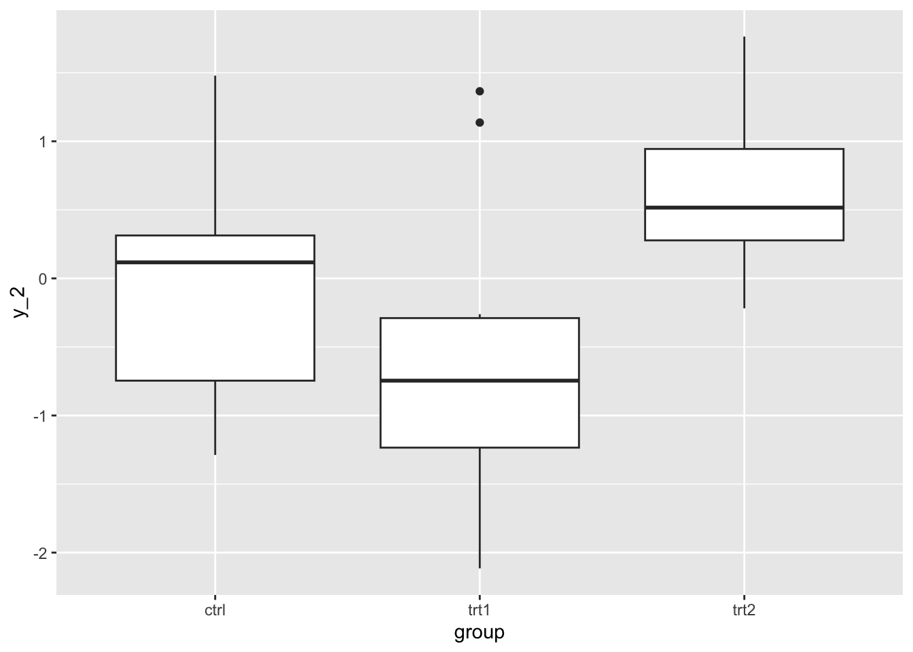
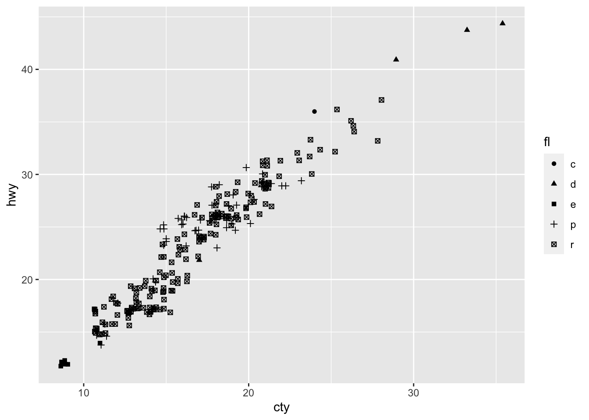
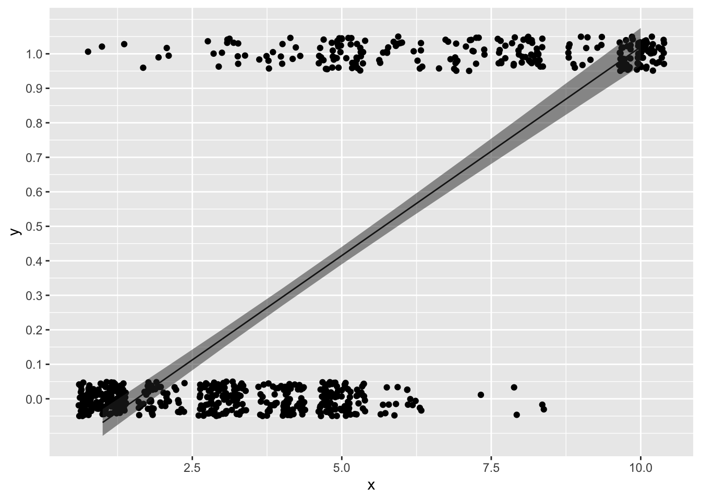
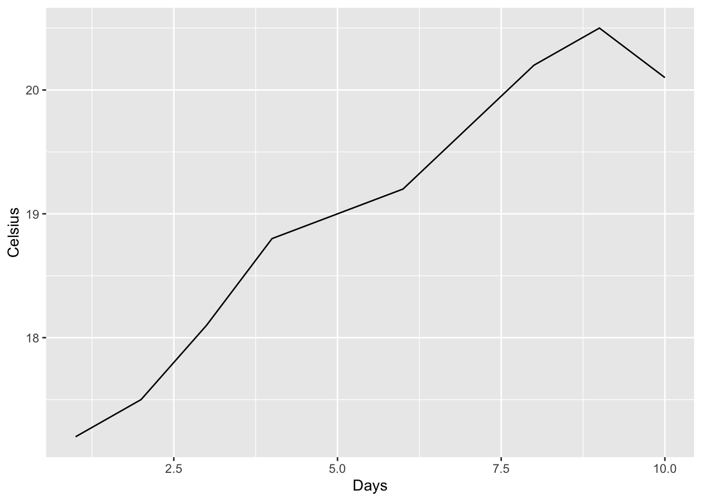
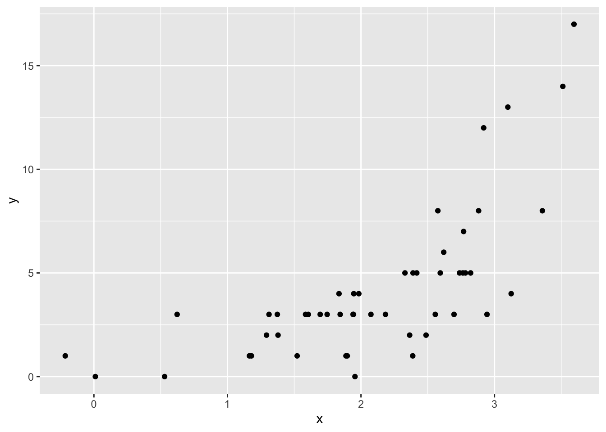
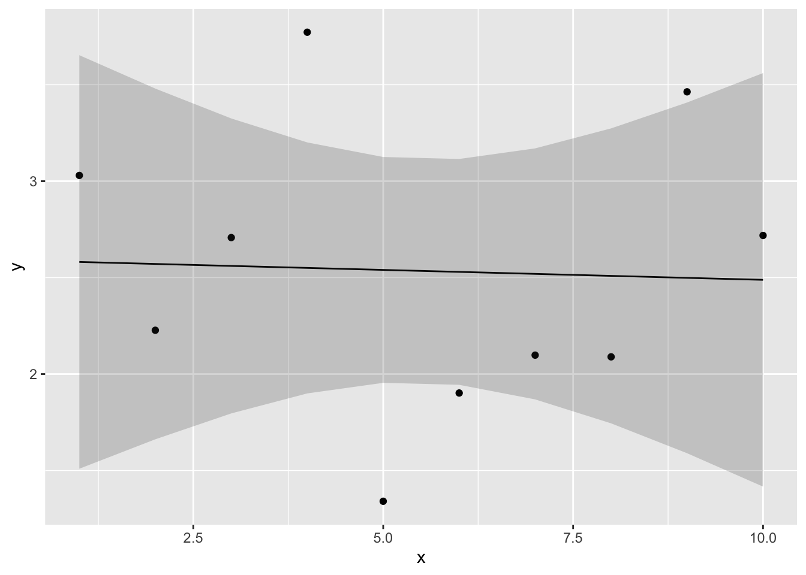
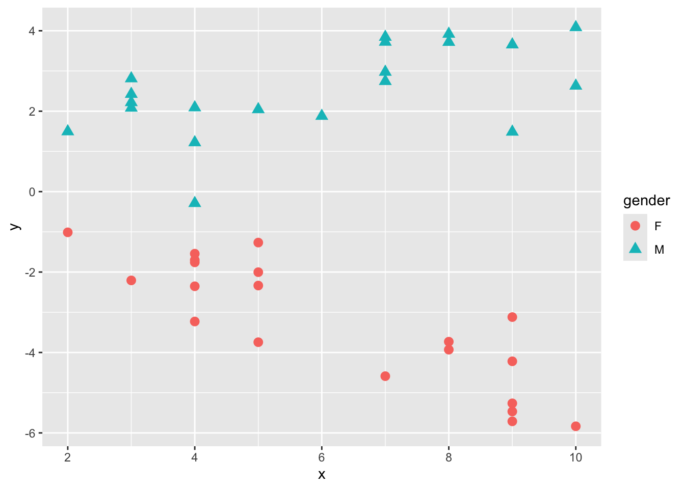

Chapter 11 一般化線形モデル
誤差分布が正規分布以外の場合の「一般化線形モデル」について学ぶ。
- ロジスティック回帰
- ポアソン回帰
- その他の一般化線形モデル
11.1 準備
tidyverseパッケージを読み込む。また，新たにMASSパッケージを使うので，インストールとロードを行う。
11.2 一般化線形モデル
線形モデルは，以下の式で表されるモデルであった。
\[ \begin{equation} \hat{y} = \alpha + \sum_{k=1}^{K} \beta_{k} x \\ \tag{1} y \sim Normal(\hat{y}, \sigma) \end{equation} \]
線形モデルでは，応答変数が正規分布に従うという前提で，応答変数\(y\)を予測するパラメータ（線形予測子の切片と係数，及び正規分布の分散）を求めた。
今回は，応答変数が正規分布以外の確率分布に従うモデルを扱う。
線形モデルを正規分布以外の確率分布に拡張したモデルを，一般化線形モデルという。
まず，応答変数が二値のカテゴリカル変数の場合に例として用いながら見ていく。
11.3 応答変数が二値の場合
前の章までは応答変数が量的変数の例を扱ってきた。では，応答変数がカテゴリカル変数である場合は，どのような解析をすればよいのだろうか。
MASSパッケージに入っているサンプルデータbiopsyを使いながら検討していこう。まず，以下のプログラムを実行して，練習用のデータdatを作成する。
library(MASS)
dat = biopsy
dat$y = ifelse(dat$class == "malignant", 1, 0) #classがbenignならばゼロ，それ以外なら1という変数yを作る
dat$x = dat$V1 #V1という変数をxという名前に変える
head(dat)## ID V1 V2 V3 V4 V5 V6 V7 V8 V9 class y x
## 1 1000025 5 1 1 1 2 1 3 1 1 benign 0 5
## 2 1002945 5 4 4 5 7 10 3 2 1 benign 0 5
## 3 1015425 3 1 1 1 2 2 3 1 1 benign 0 3
## 4 1016277 6 8 8 1 3 4 3 7 1 benign 0 6
## 5 1017023 4 1 1 3 2 1 3 1 1 benign 0 4
## 6 1017122 8 10 10 8 7 10 9 7 1 malignant 1 8xは整数の変数，yは1ならば癌，0ならば癌ではないことを意味する変数とする。 xが変化すると癌である確率が変化するかを検討したい。
まず，xとyとの関係を図で確認してみる。
ggplot2パッケージで，xをx軸，yをy軸にしてプロットしてみよう。
普通にgeom_pointで散布図を作っても点が重なって見にくいので，geom_jitterを使って描画する。geom_jitterは点をランダムでずらして描画してくれる。
ggplot() +
geom_jitter(data = dat, aes(x = x, y = y), height = 0.05) +
scale_y_continuous(breaks = seq(0,1,0.1))
では，前章までで学んだとおりに，xを予測変数，yを応答変数とした線形モデルでxの効果を検討しよう。
\[ \begin{equation} \hat{y} = \alpha + \beta x \\ \tag{2} y \sim Normal(\hat{y}, \sigma) \end{equation} \]
##
## Call:
## lm(formula = y ~ x, data = dat)
##
## Residuals:
## Min 1Q Median 3Q Max
## -0.77804 -0.17331 -0.01994 0.06859 1.06859
##
## Coefficients:
## Estimate Std. Error t value Pr(>|t|)
## (Intercept) -0.189535 0.023395 -8.102 2.43e-15 ***
## x 0.120947 0.004467 27.078 < 2e-16 ***
## ---
## Signif. codes: 0 '***' 0.001 '**' 0.01 '*' 0.05 '.' 0.1 ' ' 1
##
## Residual standard error: 0.3323 on 697 degrees of freedom
## Multiple R-squared: 0.5127, Adjusted R-squared: 0.512
## F-statistic: 733.2 on 1 and 697 DF, p-value: < 2.2e-16xに係る傾きの推定値を数値通りに解釈すると，「xが1単位増えると，yが0.12増える」ことを示している。
では，求まった傾きと切片から直線を先程のxとyとの関係の図に引いてみよう。
predict_lm = predict(result_lm, interval = "confidence", level = 0.95) #直線の95%信頼区間を求める
dat_predict = cbind(dat, predict_lm)
ggplot() +
geom_jitter(data = dat, aes(x = x, y = y), height = 0.05) +
geom_line(data = dat_predict, aes(x = x, y = fit)) +
geom_ribbon(data = dat_predict, aes(x = x, ymax = upr, ymin = lwr), alpha = 0.5) +
scale_y_continuous(breaks = seq(0,1,0.1))
線形モデルから推定された直線は，「xが増えるほどyが増える」関係を表しているように見える。
しかし，この線形モデルの結果は，yを予測する上で問題がある。
解析の目的は，\(y = 1\)の確率，つまりがんにかかる確率を推定することであるが，例えば\(x\)が10を超えると，応答変数の予測値は1以上の値を取る。また，\(x\)が2.5を下回ったときも，0未満の数値が推定されてしまう。応答変数は0か1しか取らないのに，それぞれを超える値が予測されてしまう。これは確率の推定としては不都合である。
応答変数\(y\)は連続量ではなく，0か1の値を取るカテゴリカル変数である。連続量の確率分布である正規分布に応答変数が従うという前提を置くのは理論的に正しくない。
11.3.1 ロジスティック回帰
ではどうすれば良いのか？
解決策として，モデルを以下のように変更する。
\[ \begin{equation} q = \frac{\exp(\alpha + \beta x)}{1+\exp(\alpha + \beta x)} \\ \tag{3} y \sim Bernouli(q) \end{equation} \]
\(\exp(\alpha + \beta x)\)は，\(e^{(\alpha + \beta x)}\)とも表記できる。
\(y = 1\)である確率（がんである確率）を\(q\)とする。式(3)の1つ目の式は，線形予測子\(\alpha + \beta x\)から\(q\)を導くように，式の変形を行っている（詳細は後で述べる。今はわけがわからないかもしれないが，気にせず読み進めてほしい）。 2つ目の式は，応答変数\(y\)は成功確率\(q\)のベルヌーイ分布に従うということを示している。
復習すると，ベルヌーイ分布は，試行回数が1の時の二項分布である。ベルヌーイ分布のパラメータは成功確率\(q\)で，0（失敗）か1（成功）の値を生成する。
rand = rbinom(n =20, size = 1, prob = 0.5) #size = 1にする。コインを１回投げて，表だったら1，裏だったら0。これをn=20回行った結果
rand #0か1の値が20個出るが，それぞれの0か1が裏あるいは表を意味しているとイメージしてほしい## [1] 0 1 1 1 1 0 0 0 1 0 1 0 1 1 0 1 1 0 1 0式(3)の1つ目は何を意味しているのか？以下の式について，\(z = \alpha + \beta x\)として，\(z\)を変化させると\(q\)がどう変化するか図で見てみよう。
z = seq(-10, 10, 0.1) #-10から10まで0.1刻みのベクトルzを作成
q = exp(z)/(1+exp(z)) #上の式にzを代入して，qを求める
d = data.frame(z = z, q = q) #グラフを作るために，データフレームを作る
ggplot()+
geom_line(data = d, aes(x=z, y=q))
\(z\)は\(-\infty\)から\(\infty\)の範囲を取るが，\(z\)がどのような値をとっても，\(0<q<1\)となる（限りなく0もしくは1に近づく）。\(q\)は確率なので，この0から1の範囲に収まるようになる変換は都合が良い。
この\(\exp(z)/(1 + \exp(z))\)の変換は，ロジスティック(logistic)または逆ロジット(invers-logit)と呼ばれる。
つまり，線形予測子に逆ロジットの変換を施すことで，パラメータの値にかかわらず確率の値を予測することが可能となる。
以下の式(4)は， \[ \begin{equation} q = \frac{\exp(\alpha + \beta x)}{1+\exp(\alpha + \beta x)} \\ \tag{4}\\ \end{equation} \]
右辺を線形予測子の式に揃えると，以下の式(5)になる。
\[ \begin{equation} \log\frac{q}{1-q} = \alpha + \beta x \\ \tag{5}\\ \end{equation} \]
この変換は，ロジット関数（logit function）と呼ばれる。
ロジットとは確率の対数オッズのことをいう。オッズとは成功確率と失敗確率の比（\(q/(1-q)\)），対数オッズとはオッズの対数を取ったものである。
線形予測子を変換する関数は，「リンク関数」と呼ばれる。上の例のように，応答変数が二値の場合は，推定値を0から1に収めるためにロジット関数をリンク関数として使うのが適切である。
このように，「応答変数が従う確率分布」と「線形予測子に変換をほどこすリンク関数」を選ぶことにより，線形モデルを様々なデータ解析に一般化させたものが一般化線形モデル(generalized linear model)である。
「確率分布」と「リンク関数」を応答変数のタイプに応じてカスタマイズするというイメージで捉えると良い。
上の例で見た「応答変数が従う確率分布をベルヌーイ分布（または二項分布）」，「リンク関数をロジスティック関数（ロジット関数）」とした一般化線形モデルは，ロジスティック回帰と呼ばれる。
11.3.2 Rでの一般化線形モデル
Rには，一般化線形モデルを行うための関数glm()がある。線形モデルを扱うlm()と同じ要領でプログラムを書けばよいが，確率分布とリンク関数のオプションを自分で指定する必要がある。先程のサンプルデータdatで，glm()関数を使ってロジスティック回帰をやってみよう。
glmで設定すること：
「線形予測子」，「応答変数が従う確率分布」，「リンク関数」を指定する。
familyで，応答変数が従う確率分布を指定する。
family = binomial，すなわち二項分布（binomial distribution）に従うとする。（正確にはベルヌーイ分布であるが，binomialで構わない）
(link=)で，リンク関数を指定する。ロジット関数(logit)を指定しよう。
ちなみに，(link="logit")は省略してもかまわない。family=binomialとすると，デフォルトでリンク関数をlogitとしてくれる。
では，出力結果を見てみよう。
##
## Call:
## glm(formula = y ~ x, family = binomial(link = "logit"), data = dat)
##
## Deviance Residuals:
## Min 1Q Median 3Q Max
## -2.1986 -0.4261 -0.1704 0.1730 2.9118
##
## Coefficients:
## Estimate Std. Error z value Pr(>|z|)
## (Intercept) -5.16017 0.37795 -13.65 <2e-16 ***
## x 0.93546 0.07377 12.68 <2e-16 ***
## ---
## Signif. codes: 0 '***' 0.001 '**' 0.01 '*' 0.05 '.' 0.1 ' ' 1
##
## (Dispersion parameter for binomial family taken to be 1)
##
## Null deviance: 900.53 on 698 degrees of freedom
## Residual deviance: 464.05 on 697 degrees of freedom
## AIC: 468.05
##
## Number of Fisher Scoring iterations: 6出力はlm()と似ている。 Coefficientsの部分を見る。Estimateがパラメータの推定結果である。Prがp値である。パラメータの推定値は，プラスならば応答変数が1の値，マイナスならば応答変数が0の値を取りやすいことを意味する。
xに係る傾の値き0.94は何を意味しているのか？
線形モデルでは傾きの推定値は，「予測変数が1単位増えたときの応答変数の変化量」を意味していた。今回の例も，xが1増えると確率が0.94上がるということを示しているのか？
一般化線形モデルの場合，係数の値が意味することの解釈には注意が必要である。
式(5)を思い出してほしい。
\[ \begin{equation} \log\frac{q}{1-q} = \alpha + \beta x \\ \tag{5}\\ \end{equation} \] 右辺を線形の式とすると，左辺は対数オッズとなる。つまり，\(x\)に係る傾き\(\beta\)は，\(x\)が1増えた時の\(q\)の対数オッズの変化量を意味する。確率\(q\)そのものの変化量ではない。
対数オッズと確率\(q\)との関係を図で見てみよう。x軸を\(\log(q/[1-q])\)，y軸を\(q\)とした図を示す。
q = seq(0, 1, 0.01)
logit = log(q/(1-q))
sample_dat = data.frame(q = q, logit = logit)
ggplot() +
geom_line(data = sample_dat, aes(x = logit, y = q))
つまり，対数オッズがプラスだと確率\(q\)は0.5より大きくなり，対数オッズがマイナスだと確率\(q\)は0.5より小さくなる関係にある。要は，対数オッズがプラスだと\(y = 1\)が起こりやすくなり，マイナスだと起こりにくくなることを意味している。
求まった係数の推定値を元に，確率を予測する線を引いてみよう。
new = data.frame(x = seq(0, 11, 0.1))
predict_glm = predict(result_glm, newdata = new, type = "response")
dat_predict = data.frame(new, y = predict_glm)
ggplot() +
geom_jitter(data = dat, aes(x = x, y = y), height = 0.05) +
geom_line(data = dat_predict, aes(x = x, y = y)) +
scale_y_continuous(breaks = seq(0,1,0.1))
予測線は0から1の範囲に収まっており，線形予測子から確率の予測ができている。
11.4 応答変数がカウントデータの場合
応答変数が正規分布以外に従う場合の例として，先程は応答変数が0か1の二値の値の場合を扱った。同じく応答変数に制約がある場合の例として，次は応答変数が正の値の整数しか取らない場合（0を含む）の例を扱う。
具体的には，応答変数がカウントデータの場合である（非負の整数。0個，1個，2個,3個といった個数など）。この場合は，ポアソン回帰と呼ばれる一般化線形モデルによる解析をするのが適切だと言われている。
サンプルデータを扱いながら，ポアソン回帰について学んでいこう。
11.4.1 ポアソン回帰
以下のプログラムを実行して，サンプルデータdatを作成しよう。
set.seed(1)
N= 50
x = rnorm(n=N, mean = 2, sd=1)
lambda = exp(0.01+ 0.6*x)
y = rpois(n=N, lambda = lambda)
dat = data.frame(y=y, x=x)分布を確認してみる。


xが大きいほど，yが大きいという関係がありそうである。\(x\)から，\(y\)を予測する。
ただし，ここで注意が必要な点がある。推定される\(y\)は正の値を取る離散値（整数）として推定されなければならない。
このように，応答変数が正の整数であるカウントデータである場合は，確率分布としてポアソン分布が用いられる。
モデルは以下のようになる。
\[ \begin{equation} \lambda = \exp(\alpha + \beta x) \\ y \sim Poisson(\lambda) \end{equation} \]
1つ目の式では，線形予測子から\(\lambda\)を求めている。 2つ目の式では，1つ目で求めた\(\lambda\)をパラメータとするポアソン分布から，応答変数\(y\)が生成されるということを示している。
11.4.2 ポアソン分布の復習
ポアソン分布は，パラメータ\(\lambda\)を持つ確率分布である。
\[ P(y) = \frac{\lambda^y\exp(-\lambda)}{y!} \tag{7}\\ \]
\(y\)は0以上の整数（0, 1, 2, 3, …），\(P(y)\)は\(y\)が生じる確率とする。
ポアソン分布のパラメータは\(\lambda\)だけである。期待値（平均）は\(\lambda\)，分散は\(\lambda\)である。つまり，平均と分散が等しい分布である。

ポアソン分布は，二項分布とも関連している。
二項分布のパラメータは，試行回数\(n\)と成功確率\(p\)であった。二項分布の期待値（平均）は\(np\)，分散はnp(1-p)である。
$$ y Binomial(n, p)\ E(y) = np\ Var(y) = np(1-p)\
$$
二項分布の試行回数\(n\)が大きく，成功確率\(p\)が小さい場合，二項分布の平均と分散はほとんど等しくなり，ポアソン分布に近似する。
つまり，めったに起こらないイベントが生じる回数は，ポアソン分布に従うといわれている。
11.4.3 ポアソン回帰のリンク関数
線形予測子がリンク関数でどう変換されているかを確認すると，
\[ \begin{equation} \lambda = \exp(\alpha + \beta x) \tag{3} \\ \end{equation} \]
なぜ指数関数を用いるのか？\(z=\alpha + \beta x\)として，\(\lambda=\exp(z)\)との関係を図で見てみよう。
z = seq(-5, 5, 0.1) #-10から10まで0.1刻みのベクトルzを作成
lambda = exp(z) #上の式にzを代入して，lambdaを求める
d = data.frame(z = z, q = lambda) #グラフを作るために，データフレームを作る
ggplot()+
geom_line(data = d, aes(x=z, y=lambda))
図からもわかるように，\(z\)の値に関わらず，\(\lambda\)は正の値を取る。ポアソン分布のパラメータ\(\lambda\)は\(\lambda>0\)という制約であるため，このように変換することでちょうどよくなる。
また，式(3)の右辺を線形予測子に直すと，以下になる。
\[ \log\lambda_{i}=\alpha+\beta x \tag{4}\\ \]
このように，ポアソン回帰では，応答変数が従う確率分布をポアソン分布，線形予測子と応答変数をリンクさせるリンク関数は対数関数（log）を設定する。
11.4.4 Rでのポアソン回帰
Rでポアソン回帰をやってみよう。
一般化線形モデルを扱う関数glm()で，確率分布にポアソン分布，リンク関数に対数を指定して，ポアソン回帰をやってみる。
(link = "log")は省略しても構わない。family = poissonで確率分布をポアソン分布にすれば，リンク関数は自動で対数になる。
##
## Call:
## glm(formula = y ~ x, family = poisson(link = "log"), data = dat)
##
## Deviance Residuals:
## Min 1Q Median 3Q Max
## -2.4112 -0.7542 0.1362 0.5628 1.7629
##
## Coefficients:
## Estimate Std. Error z value Pr(>|z|)
## (Intercept) -0.6829 0.2807 -2.433 0.015 *
## x 0.8951 0.1052 8.506 <2e-16 ***
## ---
## Signif. codes: 0 '***' 0.001 '**' 0.01 '*' 0.05 '.' 0.1 ' ' 1
##
## (Dispersion parameter for poisson family taken to be 1)
##
## Null deviance: 130.32 on 49 degrees of freedom
## Residual deviance: 46.52 on 48 degrees of freedom
## AIC: 197.96
##
## Number of Fisher Scoring iterations: 5推定された式が実測値をうまく予測できているか，図で確認してみよう。
new = data.frame(x = seq(0, 4, 0.1))
predict_glm = predict(result_poisson, newdata = new, type = "response")
dat_predict = data.frame(new, y = predict_glm)
ggplot() +
geom_point(data = dat, aes(x=x, y=y)) +
geom_line(data = dat_predict, aes(x = x, y = y)) 
11.4.5 一般化線形モデルのまとめ
線形モデルを正規分布以外の別の確率分布に拡張したモデルのことを，一般化線形モデルという。
二値のデータや割合である場合→ロジスティック回帰（確率分布はベルヌーイ分布もしくは二項分布，リンク関数はロジット）
カウントデータである場合→ポアソン回帰（確率分布はポアソン分布，リンク関数は対数）
次の章では，ロジスティック回帰やポアソン回帰以外の一般化線形モデルを扱う。
確認問題
問１
以下のプログラムを実行し，サンプルデータを作成する。
変数の意味は以下の通りである。
Disease: ある病気にかかっているか（1=かかっている，0=かかっていない）
BMI: BMI（肥満度を表す指標）
Exercise: 1週間あたりの運動時間（単位：時間）
Sleep: 1日の睡眠時間（単位：時間）
Disease = c(0, 0, 0, 0, 0, 1, 0, 0, 0, 1, 0, 0, 1, 0, 1, 0, 1, 0, 1, 1, 1, 1, 1, 1, 0, 1, 1, 1, 1, 1)
BMI = c(15, 16, 16, 18, 19, 20, 21, 22, 22, 23, 23, 23, 24, 24, 24, 30, 31, 31, 33, 34, 34, 34, 35, 36, 40, 40, 40, 41, 43, 43)
Exercise = c(2, 1, 1, 2, 0, 3, 1, 1, 4, 4, 2, 3, 1, 3, 1, 2, 3, 2, 1, 3, 0, 1, 3, 2, 0, 2, 2, 3, 0, 4)
Sleep = c(7, 4, 5, 4, 4, 6, 5, 6, 4, 6, 4, 7, 4, 7, 4, 6, 5, 4, 5, 6, 7, 5, 4, 6, 4, 7, 5, 5, 4, 7)
data_q01 <- data.frame(Disease = Disease, BMI = BMI, Exercise = Exercise, Sleep = Sleep)Diseaseを応答変数，BMI，Exercise，Sleepを予測変数としたロジスティック回帰を行い，5%水準で有意な効果を持つ予測変数について報告せよ。
ヒント：係数の値が正か負かにも注意して，予測変数が応答変数にどのような影響を持っていたかについて報告する。